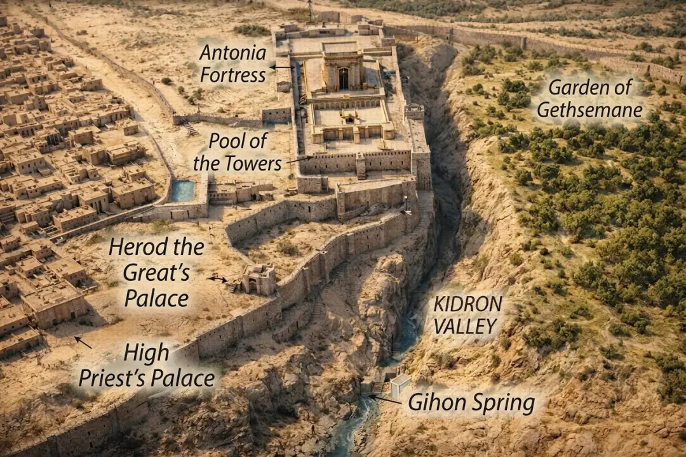
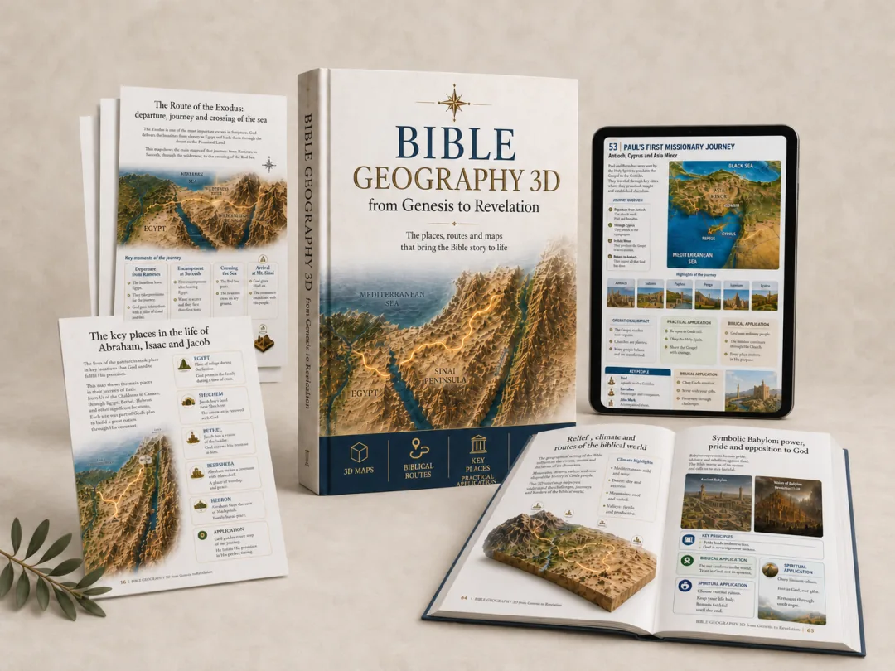
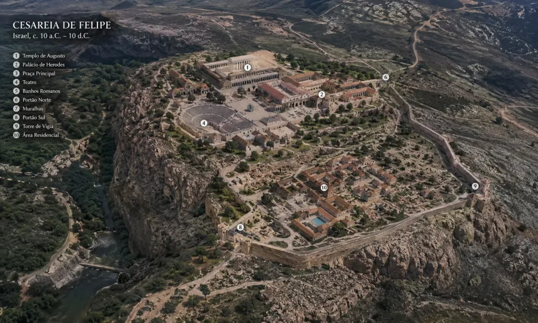
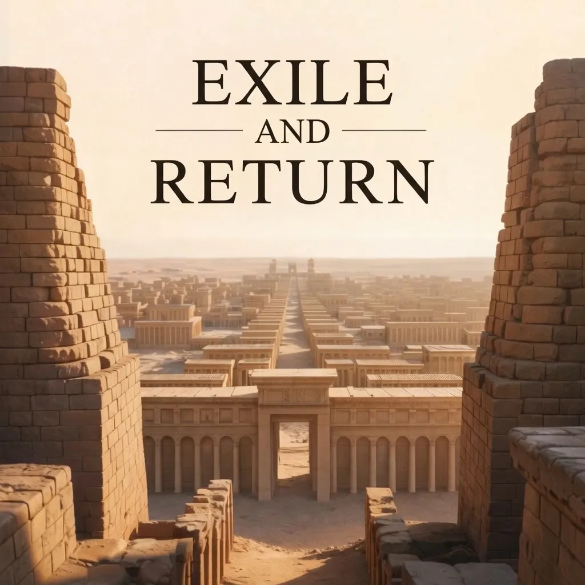
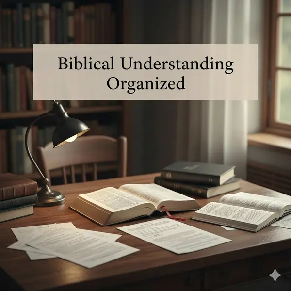
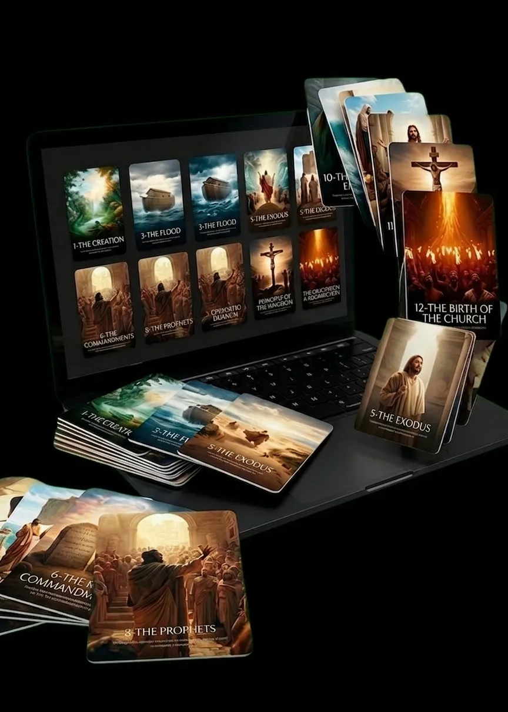
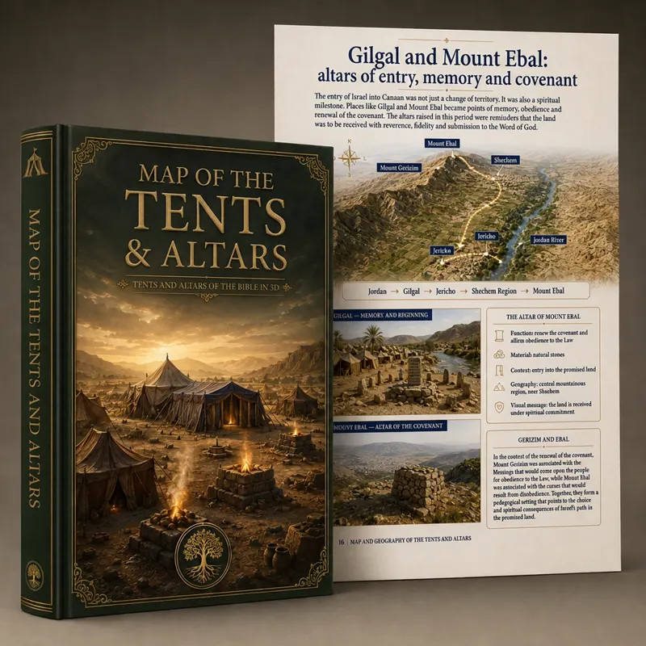

what's inside
280+ images. 100+ maps. Every era covered.
A mix of real preview pages, chapter maps, and 3D reconstructions — a small taste of the 50+ visual studies inside the full guide.




the visual bible atlas
A 300+ page visual atlas connecting scripture to the actual lands, cities and routes where it all took place — reconstructed in breathtaking 3D detail.

how it works
Start anywhere in scripture — Genesis, the Gospels, Revelation. It works with the Bible you already read.
Every key place has its own detailed map, reconstruction, and biblical explanation waiting inside.
Suddenly the roads, distances, and cities are real — and the story finally makes complete sense.

a familiar verse, finally located
"And Jesus went out with His disciples to the villages of Caesarea Philippi. On the way He asked them: Who do men say that I am?"— Mark 8:27
Read on its own, the place is just a name. See it in 3D, and suddenly you know exactly where Jesus stood, which road He walked, and why that setting mattered. That's the gap this guide closes — for hundreds of places, across the entire Bible.
what's inside
A mix of real preview pages, chapter maps, and 3D reconstructions — a small taste of the 50+ visual studies inside the full guide.

the difference
covers 66 books, genesis to revelation




trusted by 4,000+ readers
"Incredible! I never imagined the Bible could be so visual. The 3D maps helped me so much in my Bible study group."
"Top-notch quality material. The images are crystal clear and the geographical contexts bring the biblical passages to life."

"I recommend it to anyone who wants to understand the Bible on a deeper level. Worth much more than the price."

"As a Sunday school teacher, this material revolutionized my classes. The students are absolutely fascinated!"
included free today

Understand the Bible with greater clarity.

The Bible explained in an organized way.
Biblical organization for your daily routine.

A little bit of the Bible every day.

+30 8K cards of the main biblical stories.

God's first dwellings and altars, in 3D.

3D map based on archaeology.

Antioch to Rome, in 3D.
⚡ limited-time launch price
Price goes up when this timer hits zero
🔥 18 people are viewing this offer right now · 🔒 Secure Checkout · 🏆 30-Day Guarantee
questions
The moment your payment is confirmed, you'll get an email with instant access to the platform and all the material.
Yes! After purchase, you get lifetime access to all content, including every future update.
Yes! The content is 100% compatible with phones, tablets, and computers.
You're covered by a 30-day unconditional guarantee — 100% of your money back, no questions asked.
No! The material is designed for total beginners and long-time Bible students alike.
All major credit and debit cards, plus PayPal. Every transaction is processed securely.
We're confident enough in this material to back it with an unconditional 30-day money-back guarantee. Not satisfied for any reason? We refund 100% of your investment.